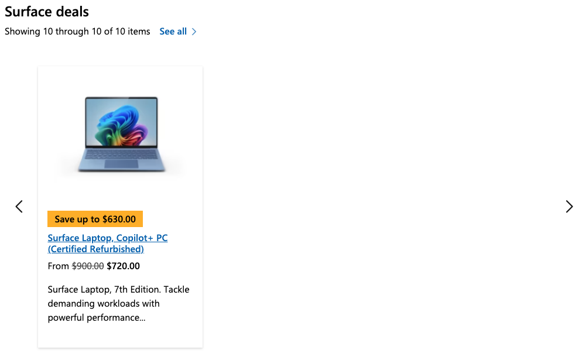
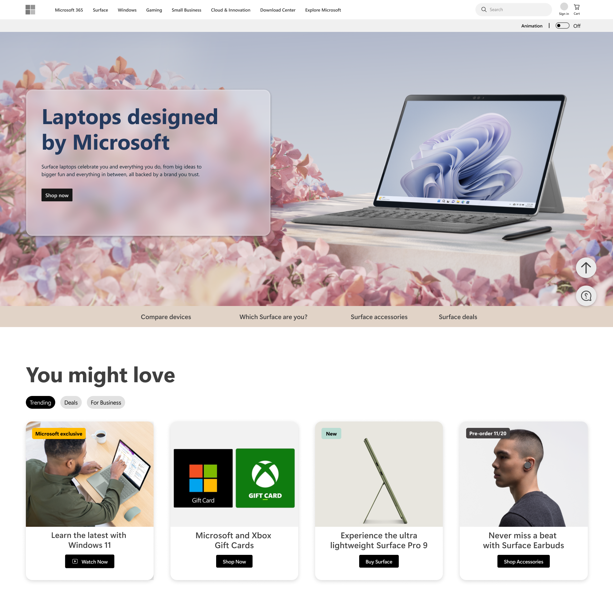
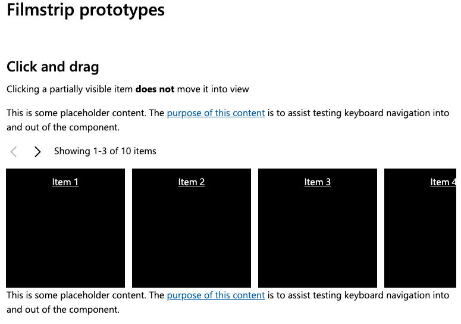

UXE Portfolio Review
Charles Cardinaux
About me
Photo by Stephen Giang, former Microsoft design coworker and Polaroid enthusiast
- UI Engineer at Microsoft since 2019
- Worked on design systems for Microsoft.com
- Passionate about accessibility and building great user experiences
- Love collaborating across disciplines
- Outside of work, I enjoy travel and music - I am currently singing with a French choir 🇫🇷 in Seattle
Microsoft.com design systems
| Project | Status | Example | My team |
|---|---|---|---|
| Microsoft Web Framework (MWF) | Legacy, no longer used | 0px border radius | ❌ |
| MWF Moray | Used in production, homepage and consumer store pages | 2px border radius | ✅ |
| Reimagine | Used in production, commercial pages | 8px border radius | ❌ |
| Reimagine Web Components | New project, one page live | ✅ |
Today I’ll talk about something
I’ve worked a lot on over the
years...
carousels
Carousels can be challenging:
- Accessibility
- Mobile experience
- Touch interactions
- Animations
- Variable content

Example 1: Moray “sneak peek” carousel 🎠
Design provided:
- Basic specs
- Video of animation
Accessibility requirements:
- Different interaction pattern from MWF carousel
- New accessibility features like skip links and different ARIA attributes
Engineering process:
- Started with Bootstrap carousel as base; rewrote JS to remove jQuery dependency and follow Moray standards
- Leveraged existing design system components and layout
- Coordinated closely with design (especially for animations)
- Got frequent accessibility feedback on dev builds
Challenges and considerations:
- Getting the animation right without full specs (just a video)
- Slow animation wayyy down
- Work directly with designer
- Ensuring touch interactions worked as expected on mobile
- Leveraging Bootstrap was a huge help for this
- Logic of slides in a 3-D space
- Sneak peek experience would require a minimum of 3 slides
Example 2: Moray “product card” carousel 🎧
Design provided:
- Specs
Accessibility requirements:
- Visible heading and status text
- New back to controls button
PM requirements:
- Quick implementation
Engineering process:
- Expanded Moray carousel to support product cards
- Added logic to redistribute cards between “slides” when the viewport resized
- Added method to provide localized status text string for JS interpolation
- Leveraged existing product card component
Challenges and considerations:
- Existing carousel was built to increment one slide (group of items) at a time; didn't work as well with multiple small cards
- Adding additional logic for specific carousels was causing code bloat

Interlude: Big Swings ⚾️
- Microsoft introduced new brand guidelines
- Proposed redesign of homepage and PDPs (product detail pages)
- Designed by a v-team without engineering input
- Goal was to move quickly and make a splash
- Included many examples of small item carousels

Interlude: Filmstrip 🎞️
- CSS scroll snap module became widely supported across browsers in 2022
- Perfect for a small item carousel experience
- Leverages native browser scrolling and animations
- Touch experience feels seamless on mobile; no need to write custom touch logic
- Proposed leveraging scroll snap for a new type of small item carousel
- Built prototypes to demo scroll snap functionality to the design and accessibility teams and gather feedback

Example 3:
Reimagine carousel 🚾
Reimagine Web Components (example)
Design provided:
- Specs
Accessibility requirements:
- No dedicated accessibility team on this project
- Ported accessibility features from Moray
Engineering process:
- Built base Scrollslider and ScrollsliderItem components to provide scroll snap functionality
- Built Carousel and CarouselItem components that extend Scrollslider components and add additional styles and functionality
- Leveraged existing card components for carousel content
Challenges and considerations:
- Received late guidance from design that overflow elements should optionally be full-bleed
- This was not clear from specs
- Added a full-bleed attribute that uses padding, negative margin, and scroll padding to implement a full-bleed effect
Thank you!